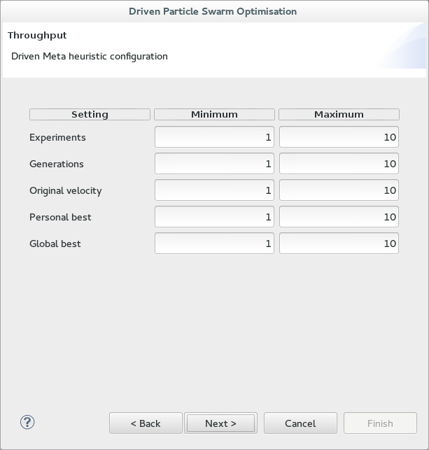

Cost function configuration

The above is a screen shot of the second page of the CPT wizard. In this page you are configuring the Cost function parameters:
- Performance weight* - increasing this with respect to the population weight makes performance cost
a "more important" cost to reduce than population cost.
- Population weight* - converse to the above, an increase in population weight makes population cost
"more important" to reduce than performance cost.
*See CPT reference "Cost function" for more details